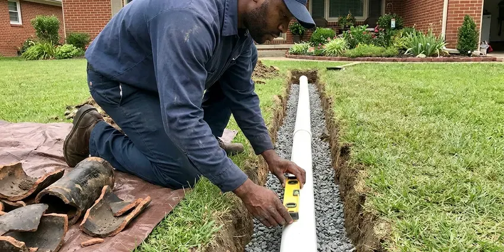

Well Pump Replacement in Wauwatosa, WI
When your well pump fails, HKV Plumbing provides fast, reliable well pump replacement services across Wauwatosa, WI.
- Submersible Pump Specialists
- Prompt Well Pump Service
- Guaranteed Work
- Licensed and Insured Plumbers

Need a New Well Pump? Get Expert Replacement Service in Wauwatosa, WI.
Our certified plumbers are ready to provide an accurate estimate and efficient well pump replacement.
Your Go-To for Well Pump Replacement in Wauwatosa, WI
When your well pump gives out, HKV Plumbing is here to help Wauwatosa homeowners with efficient and expert replacement. We diagnose issues quickly and recommend the right pump for your well depth and water needs.
Our expertise includes:
- Years of Wisconsin Well System Experience
- Control box, capacitor and pressure switch replacement
- Submersible pump pulling and setting with professional pump hoists

Additional Plumbing Replacement Services in Wauwatosa, WI
When repairs are no longer enough, our replacement services in Wauwatosa, WI deliver modern, efficient equipment installed right.




Wauwatosa sewer replacement specialists

Customers
Why Choose HKV Plumbing for Well Pump Replacement in Wauwatosa, WI?
Choosing the right well pump and installing it properly is key for long-term performance. We make sure your new system is well matched to your well and water demands.
- Right Equipment, We use pump hoists and proper tools for deep wells.
- Expert Installation, Our licensed plumbers have extensive experience with well systems, for a correct and durable installation every time.
- Quality Pumps, We install only dependable, high-efficiency well pumps designed to provide years of trouble-free service for your home.
Citywide Coverage
HKV Plumbing proudly serves every neighborhood and surrounding community in Wauwatosa, with fast response times for well pump replacement. We understand that well pump failures are urgent, which is why our local teams are always on call to assist.
Experienced Team
Our team is made up of highly trained and certified plumbers with extensive experience in well pump systems. They are experts in diagnosing pump issues and performing precise replacements, so your new pump runs the way it should.
Safety-First Approach
Safety is paramount in all well pump replacement projects, especially with electrical components and deep well access. We strictly follow all safety protocols, and installations meet or exceed Wisconsin plumbing and electrical codes.
Trusted Certified Wauwatosa Plumbing Services Professionals
At HKV Plumbing, we take pride in providing licensed, certified plumbing services throughout Wauwatosa, WI. Backed by recognized industry credentials, our experienced plumbers combine technical skill with genuine customer care. Whether it is repair, installation, or maintenance, we follow strict safety and quality standards to deliver lasting results you can trust.
Call Us Now PHCC Plumbing Contractor Recognition
PHCC Plumbing Contractor Recognition Better Business Bureau (BBB) Accreditation
Better Business Bureau (BBB) Accreditation Angi Certified Pro
Angi Certified Pro ISO 9001 Quality Management Certification
ISO 9001 Quality Management CertificationReliable Well Pump Replacement Services in Wauwatosa, WI
Well Pump Electrical Troubleshooting and Replacement in Wauwatosa, WI
Many well pump failures come from electrical problems, such as faulty wiring, a tripped breaker or a burned-out motor. Our licensed plumbers are also experienced in electrical diagnostics related to well systems. We identify whether the issue is electrical or mechanical and, if necessary, replace the pump motor or the entire unit. All electrical components are left safe and up to code in Wauwatosa, WI.

Well Pump Upgrades and Efficiency in Wauwatosa, WI
Beyond simple replacement, we can also help you upgrade to a more energy-efficient well pump, possibly saving you money on utility bills. Modern well pumps often feature variable speed drives and improved motor designs that consume less power. Talk through your options with HKV Plumbing to find an efficient well pump replacement for your Wauwatosa, WI property.
Franklin Electric Well Pump Replacement in Wauwatosa
Franklin Electric pumps are another trusted name in the well water industry, offering durable solutions for various well depths. HKV Plumbing is experienced in replacing and installing Franklin Electric well pumps, including their submersible and jet pump lines. We make sure your new Franklin pump is correctly integrated into your existing system for strong performance and longevity in Wauwatosa.
Grundfos Well Pump Replacement in Wauwatosa, WI
Grundfos is a leading brand known for its dependable and energy-efficient well pumps. If your existing Grundfos pump has failed, or if you are looking for a high-quality replacement, HKV Plumbing installs a full range of Grundfos models. Our expertise means proper selection and installation of the correct Grundfos pump for your well's requirements in Wauwatosa, WI.
Emergency Well Pump Replacement in Wauwatosa
A sudden well pump failure can leave you without water, creating an immediate emergency. HKV Plumbing offers emergency well pump replacement services to restore your water supply as quickly as possible. We understand the urgency, especially for rural homes around Wauwatosa that rely only on well water. We prioritize rapid response to get your system back online.
Well Pump Diagnosis and Sizing in Wauwatosa
Accurate diagnosis is key to effective well pump replacement. We do not just replace a pump, we assess your entire well system, including the well depth, yield and your household's water demand. This allows us correctly size your new pump, preventing premature failure and keeping enough water flowing to your home in Wauwatosa.
Agricultural and Ranch Well Pumps in Wauwatosa
Larger properties may need higher-horsepower pumps for irrigation or livestock. We replace pumps sized for higher flow and deeper wells. Three-phase pumps may require specialized controls. We coordinate with your schedule to minimize downtime. We also check storage tanks and distribution lines.

Drop Pipe and Wire Replacement in Wauwatosa
Old galvanized drop pipe can corrode and leak, causing pressure loss. Damaged wire can cause motor failure. When we pull the pump, we inspect both. We replace them with durable materials like schedule 120 PVC or poly pipe as appropriate. This helps the new pump last longer.
Well Pump Replacement Near Me in Wauwatosa, WI
When you search for well pump replacement near me in Wauwatosa, WI, you want a local company that understands the challenges of wells in the area. HKV Plumbing is your reliable local expert, providing prompt and efficient service. We know the common well system setups and water conditions around Wauwatosa.
If you are searching for well pump replacement near me, you need a team with the right equipment and local knowledge. HKV Plumbing serves Wauwatosa and surrounding rural areas. We can respond fast to no-water emergencies.
HKV Plumbing at a Glance
- Fully licensed plumbing team covering Wauwatosa, WI
- 24/7 emergency service with same-day scheduling
- Upfront, flat-rate pricing before work begins
- 4.8-star rated by 448+ Wisconsin customers
Wauwatosa Map
Wauwatosa Information
- Population
- 47,038
- Area codes
- 414/262/920
- Service area
- Wauwatosa and communities within 40 miles
- Nearby
- Milwaukee, West Allis, Waukesha, Racine
Well depth and shifting water tables make proper well pump sizing and installation critical for homes in Wauwatosa, WI.
Expert Services
Trust our professionals for reliable HKV Plumbing solutions in Wauwatosa, WI.
Our Specialized Plumbing Services in Wauwatosa, WI
At HKV Plumbing, we provide a complete range of plumbing services across Wauwatosa, WI. From leak detection to full system installations, our team ensures fast, precise, and affordable service for both residential and commercial properties. Explore our core services below:


How Our Well Pump Replacement Process Works in Wauwatosa, WI
We restore water fast with careful diagnosis and professional installation.
Request a Quote
Call us at (414) 432-4641 to schedule an appointment. We will gather initial information about your well system and the issues you are experiencing.
On-Site Diagnosis
Our licensed plumber will visit your Wauwatosa property to accurately diagnose the well pump problem. We will inspect the pump, pressure tank and electrical components to confirm the need for replacement.
Pump Selection
Based on your well's depth, water usage and budget, we will recommend the right well pump for your needs. We will provide a clear, upfront estimate for the whole replacement.
Frequently Asked Questions About Well Pump Replacement in Wauwatosa
The cost of well pump replacement in Wauwatosa, WI usually ranges from $1,500 to $3,500, though it can vary. Factors affecting the price include the type of pump, well depth, horsepower and any additional components needed like pressure tanks or wiring upgrades. We provide a detailed, upfront quote after a thorough assessment.
The lifespan of a well pump varies greatly depending on usage, water quality and pump type, but most last between 10 and 20 years. Regular maintenance and proper sizing can extend its life, but eventually wear and tear will require replacement.
Jet pumps sit above ground and pull water up from shallower wells, usually less than 25 feet. Submersible pumps are placed directly inside the well casing, submerged in water, and are used for deeper wells, pushing water up to the surface. Each has specific applications and benefits.
We install Grundfos, Goulds and Franklin Electric pumps. These brands are reliable and widely supported.
Permit requirements vary by county. We follow local requirements for well work.
Well pump replacement is a complex job that involves high voltage electricity, heavy equipment and possibly deep well access. It requires specialized tools and experience for proper installation, electrical safety and compliance with local plumbing codes. It is strongly recommended to hire a licensed professional to avoid injury, property damage or costly mistakes.
In many areas, permits may be required for major plumbing work like well pump replacement, especially if it involves changing the well system's electrical or structural components. HKV Plumbing will help you navigate any permitting in Wauwatosa, WI so your installation is fully compliant with local regulations.
It is often a good idea to consider replacing your pressure tank at the same time as your well pump, especially if both are of similar age. A new pressure tank can improve the efficiency and lifespan of your new pump by reducing cycling. It also saves on labor costs to do both jobs at once.
What People Are Saying About Our Plumbing Experts?

Robert G.
The trenchless sewer replacement saved our front yard. They walked us through the camera inspection footage first so we knew exactly what we were paying for.
Sewer Line Replacement · Racine, WI
Patricia H.
We had a slab leak that two other companies could not find. HKV Plumbing located it in under an hour, explained our options, and the price matched the quote to the dollar.
Slab Leak Repair · Racine, WI
Mark T.
When our office needed drain cleaning, HKV Plumbing provided quick, reliable service. The plumber arrived on time and made sure every drain flowed perfectly before leaving. Very satisfied.
Drain Cleaning · Waukesha, WIJames P.
Our commercial plumbing system had a leak under the sink, and HKV Plumbing handled it professionally. The plumbers arrived quickly and restored everything without disruption to our customers.
Commercial Plumbing · Kenosha, WI
Daniel K.
A pipe burst at 11 pm and they actually answered. The plumber showed up within the hour, shut everything down, and had us back to normal the next morning. Could not ask for more.
Emergency Plumbing · Wauwatosa, WI
Emily R.
I called HKV Plumbing for plumbing repair, and the technician was fast, polite, and thorough. They explained the problem clearly and fixed it the same day. I will definitely hire them again. Highly recommended!
Plumbing Repair · Milwaukee, WI